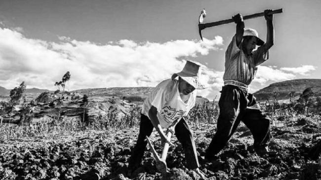

Historia de la República del Perú
La República del Perú es un país ubicado en América del Sur. Su historia como república se remonta al 28
de
julio de 1821, cuando el general argentino José de San Martín proclamó la independencia del Perú del
dominio
español.
Tras la independencia, el Perú se convirtió en una república y se estableció un gobierno provisional
encabezado por San Martín. Sin embargo, las tensiones políticas y los conflictos internos llevaron a la
renuncia de San Martín en 1822 y al establecimiento de la República Peruana como una república unitaria.
Durante las primeras décadas de la república, Perú experimentó una serie de cambios políticos y
sociales.
Hubo una lucha constante por el poder entre diferentes facciones y caudillos militares, lo que generó
inestabilidad y conflictos internos. Además, el país tuvo que enfrentar diversas amenazas externas, como
la
Guerra con la Gran Colombia y la Guerra con Chile.
En 1866, se promulgó una nueva constitución que estableció un sistema presidencial y dio inicio a un
período
conocido como la "República Aristocrática". Durante esta época, la economía peruana experimentó
un auge debido a la exportación de guano y salitre, lo que permitió la modernización del país y la
construcción de
infraestructuras importantes, como ferrocarriles y puertos.
Sin embargo, a fines del siglo XIX, Perú se vio involucrado en una serie de conflictos armados que
tuvieron
un impacto significativo en el país. En 1879, estalló la Guerra del Pacífico entre Perú, Chile y
Bolivia, en
la cual Perú perdió gran parte de su territorio y sufrió una devastadora derrota. Esto tuvo
consecuencias
económicas y sociales profundas y generó un sentimiento de resentimiento y nacionalismo en el país.
A lo largo del siglo XX, Perú enfrentó diferentes etapas de inestabilidad política, con golpes de Estado
y
gobiernos autoritarios. Durante la década de 1980 y 1990, el país se vio afectado por un conflicto
interno
entre el gobierno peruano y grupos guerrilleros, principalmente el grupo Sendero Luminoso. Este
conflicto
dejó miles de muertos y desaparecidos, así como graves violaciones a los derechos humanos.
A partir de la década de 1990, Perú experimentó una serie de reformas económicas y políticas que
llevaron a
un período de crecimiento económico y estabilidad relativa. Desde entonces, el país ha tenido
alternancia
democrática y ha logrado avances en diversos aspectos, aunque aún enfrenta desafíos importantes en áreas
como la pobreza, la desigualdad y la corrupción.
Características de la República
- Adopción de un sistema democrático y republicano.
- Desarrollo de una Constitución Política.
- Cambio en la organización política y administrativa del país.
- Transformaciones sociales, económicas y culturales.
Acontecimientos importantes
La Reforma Agraria
La reforma agraria de la República del Perú, llevada a cabo entre 1969 y 1975 durante el gobierno de Juan Velasco Alvarado, fue un proceso histórico que buscaba transformar la estructura agraria del país y promover la justicia social en el campo. En ese momento, Perú sufría de una gran concentración de la tierra en manos de unos pocos terratenientes, mientras que la mayoría de los campesinos vivían en condiciones precarias y carecían de acceso a tierras para cultivar y vivir dignamente. Esto generaba desigualdades sociales y económicas profundas, además de conflictos y tensiones en el campo. El objetivo principal de la reforma agraria era redistribuir la tierra de manera equitativa, otorgando parcelas a los campesinos sin tierras y promoviendo la agricultura familiar. Para lograr esto, se implementaron medidas como la expropiación de grandes latifundios improductivos y su redistribución entre los campesinos organizados en comunidades agrarias. También se estableció un límite máximo de propiedad de tierras para evitar la concentración excesiva. Además de la redistribución de tierras, la reforma agraria también buscaba mejorar las condiciones de vida y trabajo de los campesinos. Se implementaron programas de capacitación y asistencia técnica para promover prácticas agrícolas modernas y eficientes. También se establecieron cooperativas agrarias para fomentar la producción colectiva y mejorar el acceso a mercados y servicios. La reforma agraria tuvo un impacto significativo en el campo peruano. Por un lado, permitió que miles de campesinos accedieran a tierras propias, lo que les brindó seguridad y estabilidad. Esto les permitió mejorar sus condiciones de vida, aumentar su producción agrícola y generar ingresos para sus familias. Además, la reforma agraria contribuyó a reducir las tensiones sociales en el campo y a promover un mayor sentido de justicia y equidad. Sin embargo, la reforma agraria también tuvo sus desafíos y críticas. Algunos sectores argumentaron que la expropiación de tierras afectó negativamente la productividad agrícola, ya que muchos terratenientes tenían conocimientos y recursos que los campesinos recién adquirían. También hubo casos de corrupción y mala gestión en la implementación de la reforma, lo que generó problemas y conflictos en algunos lugares.
Gobierno de Alberto Fujimori
El gobierno de Alberto Fujimori en la República del Perú, que se extendió desde 1990 hasta el año 2000, fue un período de profundos cambios y controversias en la historia del país. Fujimori asumió la presidencia en medio de una grave crisis económica, política y social. Durante su mandato, implementó una serie de medidas radicales conocidas como el "Fujishock", que buscaban estabilizar la economía peruana y combatir la hiperinflación. Estas medidas incluyeron la liberalización del mercado, la privatización de empresas estatales y recortes drásticos en el gasto público. Si bien estas políticas lograron estabilizar la economía, también generaron una creciente desigualdad y un aumento en la pobreza. Uno de los aspectos más controvertidos del gobierno de Fujimori fue su lucha contra el grupo terrorista Sendero Luminoso. Bajo su mandato, se implementó una estrategia militar agresiva para combatir a esta organización, lo que llevó a violaciones graves de los derechos humanos. Se reportaron numerosos casos de tortura, desapariciones forzadas y ejecuciones extrajudiciales por parte de las fuerzas de seguridad. Además, durante su gobierno se produjo el autogolpe de Estado en 1992, cuando Fujimori disolvió el Congreso y asumió poderes dictatoriales. Esta acción fue ampliamente criticada tanto a nivel nacional como internacional por violar el orden democrático y los derechos humanos. Sin embargo, también se reconocen algunos logros durante su mandato. Fujimori implementó programas sociales como el vaso de leche y el programa de alimentación escolar, que buscaban combatir la pobreza y mejorar la nutrición de los más vulnerables. Asimismo, se le atribuye la captura y condena del líder de Sendero Luminoso, Abimael Guzmán. El gobierno de Fujimori llegó a su fin en medio de un escándalo de corrupción en el año 2000, cuando se reveló la existencia de un sistema de corrupción conocido como "vladivideos", en el que se mostraba a altos funcionarios sobornando a políticos y periodistas. Esto llevó a su destitución y fuga a Japón, donde permaneció varios años antes de ser extraditado y condenado por violaciones a los derechos humanos y corrupción.